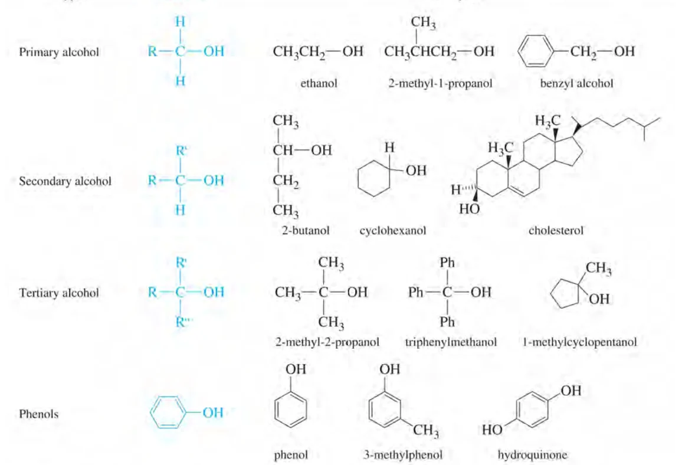
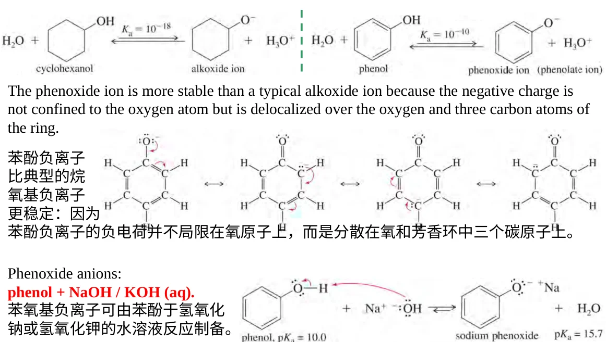

LECTURE 22 · 2026-11-17
醇Ⅰ：命名、结构与酸性
羟基位置、氢键、溶解性、醇盐与苯氧负离子
22.1 · FUNCTIONAL GROUPS
醇、酚和硫醇的结构
醇的羟基连在饱和碳上，通式 R–OH。带 OH 的碳连接一个、两个、三个碳时，分别为伯醇、仲醇和叔醇。苄醇 Ph–CH2OH 是伯醇，苯酚 Ph–OH 的 OH 直接连芳香环。烯丙醇 CH2=CHCH2OH 的羟基碳为 sp3，烯醇的 OH 则直接连双键碳。含两个 OH 的化合物称二醇，相邻二醇是邻二醇。硫醇含 –SH，是醇的含硫类似物。
分子中的高频实例包括甲醇、乙醇、异丙醇、胆固醇以及脂肪醇。苄基、烯丙基描述羟基碳附近有什么骨架，伯仲叔描述羟基碳直接连几个碳，两套信息可同时写在同一个分子上。

来源：幻灯片 3、9、11–14
22.2 · IUPAC NOMENCLATURE
系统命名：先确定羟基在名称中的角色
OH 为主官能团时，选择含有该羟基碳的合适母链，后缀用 -ol。优先给 OH 低位次，再考虑烯炔位次和支链位次。课件例题中，绕过羟基所在支路会得到更长的碳链，但该链缺少主官能团，应选择含 OH 的五碳链。另一个例子为 (Z)-4-氯丁-3-烯-2-醇，2 是羟基位次，3 是双键位次，Z 由两端的 CIP 优先基团决定。
单羟基环醇从羟基碳作 C1，沿环比较多重键、取代基位次。环己-2-烯-1-醇的双键从 C2 开始，醇位次仍为 1。环上相对构型可用 cis/trans（顺/反），已经知道各立体中心的绝对构型时可标 R/S。若有多个 OH，选择纳入尽量多羟基的母体，按位次写 -diol 或 -triol，如 ethane-1,2-diol（乙烷-1,2-二醇，乙二醇）。
本章采用的常见后缀优先顺序包括羧酸及其衍生物、腈、醛、酮、醇、胺，随后再处理不饱和键和前缀取代基。酮优先于醇时，后缀写 -one、OH 用 hydroxy-。例如 HOCH2CH2C(O)CH3 为 4-羟基丁-2-酮。羧酸优先时，从羧基碳开始编号，如 CH3CH(OH)CH2COOH 为 3-羟基丁酸。
来源：幻灯片 4–9
22.3 · COMMON NAMES AND RELATED GROUPS
俗名、硫醇和取代酚
俗名可用烷基名加 alcohol，例如 isopropyl alcohol 对应 propan-2-ol，tert-butyl alcohol 对应 2-methylpropan-2-ol，benzyl alcohol 对应苯甲醇。alkyl alcohol 的说法把醇想成 R–OH，有助于辨认原料标签。常见二醇俗名如 ethylene glycol，甘油 glycerol 对应 propane-1,2,3-triol。
硫醇以 -thiol 作后缀，例如 ethanethiol（乙硫醇），传统名 mercaptan 可在旧教材中见到。酚用 phenol 作母体时，羟基所连芳环碳为 1。2-、3-、4-取代分别位于邻、间、对位，2-methylphenol 又称邻甲酚。多个官能团同在分子里时按主官能团决定母体和编号。
来源：幻灯片 9–12
22.4 · STRUCTURE AND HYDROGEN BONDING
O–H 极性与分子间氢键
醇氧有两组孤对和两根 σ 键，局部电子对几何近似四面体，C–O–H 呈弯曲形。氧的电负性使 O–H 与 C–O 都有极性。OH 的氢是氢键供体，氧的孤对可作受体。二甲醚和乙醇分子式相同，乙醇分子之间能形成 O–H···O 网络，沸点明显高于二甲醚。醚虽没有 O–H，仍可接受水给出的氢键。
比较沸点时同时考虑氢键、色散力和分子形状。同系列醇往往随碳数增大而沸点升高。同碳数的异构体，支化常降低有效接触面积，羟基附近拥挤也会改变分子间相互作用。熔点受晶体堆积影响大，趋势可与沸点不同，例如叔丁醇的熔点较高。
来源：幻灯片 13、15–17
22.5 · SOLUBILITY
水溶性是羟基和碳骨架共同决定的
与水混合时，OH 可与水供受氢键，烃链周围的水则要重新安排。甲醇、乙醇及小分子丙醇易与水混溶。随直链增长，疏水部分增加，正丁醇到正己醇的水溶性明显下降。在相同碳数下，支化往往提高水溶性，例如叔丁醇与水混溶而正丁醇只部分互溶。二醇的两个 OH 提供更多水合位置，常比相同碳数的单羟基醇更亲水。
来源：幻灯片 18–19
22.6 · ACIDITY AND SOLVATION
比较酸性，从共轭碱看起
ROH 解离生成 RO−。比较一组醇时，先问负电荷如何稳定，再考虑溶剂对各个负离子的水合。以水中常用近似值为例，甲醇 pKa 约 15.5，水约 15.7，乙醇约 16，叔丁醇约 18。体积较大的烷氧负离子在水中较难充分溶剂化，烷基的给电子效应也可削弱负电氧的稳定性。
卤素的吸电子诱导效应可增强酸性，通常距离 OH 越近越明显。2-氯乙醇比乙醇酸性强，2-氟乙醇通常比对应溴代物酸性强。按题目给定体系，把同类化合物逐项比较，再把羧酸、酚、醇、水和端炔放回总序列。相同条件下共轭酸越强，其共轭碱越弱。
碱性排序要确认溶剂，并检查两种稳定化方式。甲氧基、乙氧基等负离子主要靠溶剂化和诱导效应。对位带硝基的苯氧负离子还有更强的吸电子稳定化，因此比苯氧负离子碱性弱。对位甲氧基可通过共振给电子，使相应苯氧负离子碱性较强。
来源：幻灯片 20–24
22.7 · ALKOXIDE FORMATION
烷氧基盐的生成
醇与金属 Na 或 K 可形成烷氧基盐并放出 H2。例如 2 EtOH ＋ 2 Na → 2 EtONa ＋ H2。该反应伴随氧化还原，与用另一种碱进行质子转移的计量不同。NaH 也可夺取 O–H 的氢，生成 H2。低含水量有利于保存活泼烷氧基。体积大的叔丁氧基常作强碱，用于 E2；小烷氧基也能在合适底物上作亲核体。
来源：幻灯片 25–26
22.8 · PHENOL AND PHENOXIDE
苯酚为什么能溶进碱水
苯酚去质子化后形成苯氧负离子，氧上的孤对与芳环共轭，负电荷可在共振式中出现在邻、对位。环己醇的共轭碱缺少这一离域结构。苯酚 pKa 约 10，环己醇约 16–18，差异随数据条件而变。水溶液中的 NaOH 可有效把酚转化为离子型苯氧盐，酸化后可重新得到中性的酚。

作业中，含同样稠环骨架的两个异构体可用 OH 的连接位置比较。一种 OH 连在芳香环，能与稀 NaOH 形成水溶性更高的酚盐；另一种 OH 连在饱和碳，主要保持中性。比较卤代醇时则画出 OH 与卤素的间隔，结合卤素强弱和距离判断。
来源：幻灯片 27–28
22.9 · WORKED COMPARISONS
从结构读名字和性质
把 (CH3)2CHCH2OH 和 (CH3)3COH 并排画，前者的 OH 碳是 CH2，连一个碳，所以是伯醇 2-甲基丙-1-醇。后者 OH 碳连三个甲基，是叔醇 2-甲基丙-2-醇。按常见水相趋势，后者的共轭碱更拥挤、较难充分水合，酸性较弱。判断结构与酸性时，应先找到 OH 的连接点，而后再检查支链离它有多远。
比较 2-氯丙-1-醇和 3-氯丙-1-醇，将两者都从 OH 端编号。前者 Cl 离羟基较近，吸电子作用较强，通常酸性较强。比较 2-氟乙醇与 2-氯乙醇时，间隔相同，氟的吸电子诱导效应通常较强。比较苯酚与苄醇时，先画共轭碱。在苄氧负离子里，O− 与苯环之间隔着饱和 CH2，稳定化方式与苯氧负离子不同。
来源：幻灯片 23–24、28
来源：Org. Chem. Lect. 22 (Chapter 10-1).pptx（共 28 页）